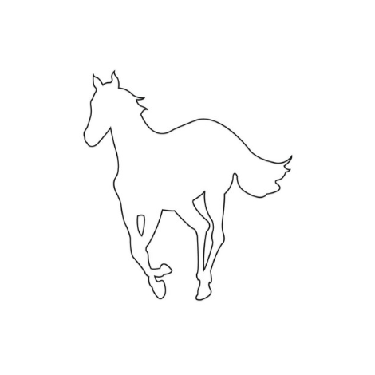
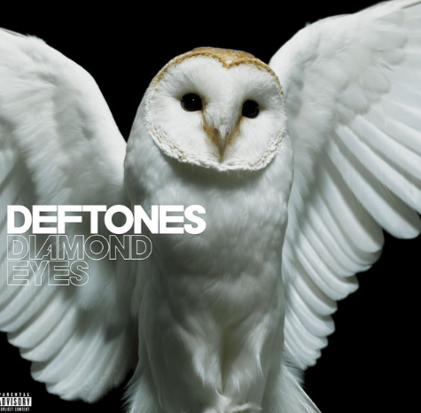
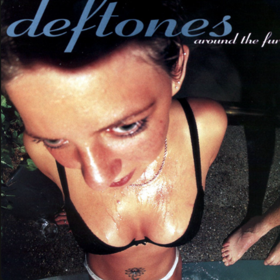

Flexbox Subpage

White Pony (2000):
Considered a landmark album in Deftones' discography, "White Pony" showcases the band's
experimentation with atmospheric soundscapes and ethereal melodies. The cover art, designed by artist
Frank Maddocks, features a surreal and symbolic depiction of a white horse with glowing red eyes against
a dark background. This iconic imagery has been interpreted in various ways, symbolizing purity,
transformation, and the subconscious mind, aligning with the album's introspective and innovative
nature.

Diamond Eyes (2010):
Following a period of creative turmoil and personal challenges, "Diamond Eyes" marked a
triumphant return for Deftones. The album cover features a captivating and symbolic image a stylized
diamond with an eye at its center, set against a gradient background of blue and black hues. This
striking imagery reflects the album's themes of resilience, transformation, and emotional depth, as the
band emerged from adversity with renewed energy and creativity.
music.

Around the Fur (1997):
The cover of Deftones' album "Around the Fur" is a striking and provocative image that has become iconic
in the realm of alternative metal. Released in 1997, this album marked a significant point in the band's
career as they further refined their unique blend of heavy guitar riffs, intricate rhythms, and
emotional intensity.The choice of imagery reflects the themes explored in the album's lyrics, which
delve into topics such as desire, aggression, and inner turmoil. By juxtaposing the sensual with the
aggressive, the cover art sets the tone for the album's dynamic and emotionally charged music.

Koi No Yokan (2012):
"Koi No Yokan" represents a continuation of Deftones' exploration of atmospheric and emotive
soundscapes. The album cover, designed by artist Frank Maddocks, features a mesmerizing and intricate
artwork inspired by Japanese aesthetics. The stylized depiction of a human eye surrounded by swirling
patterns and vibrant colors evokes a sense of mystery and introspection, reflecting the album's themes
of
love, fate, and the unknown.